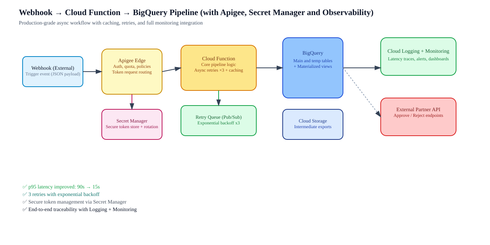
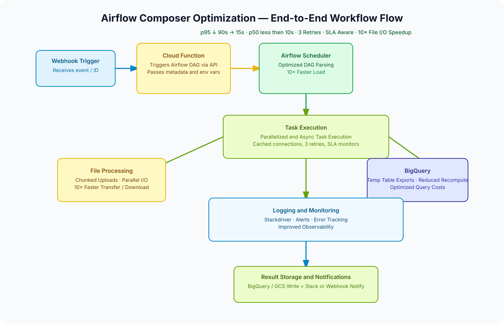
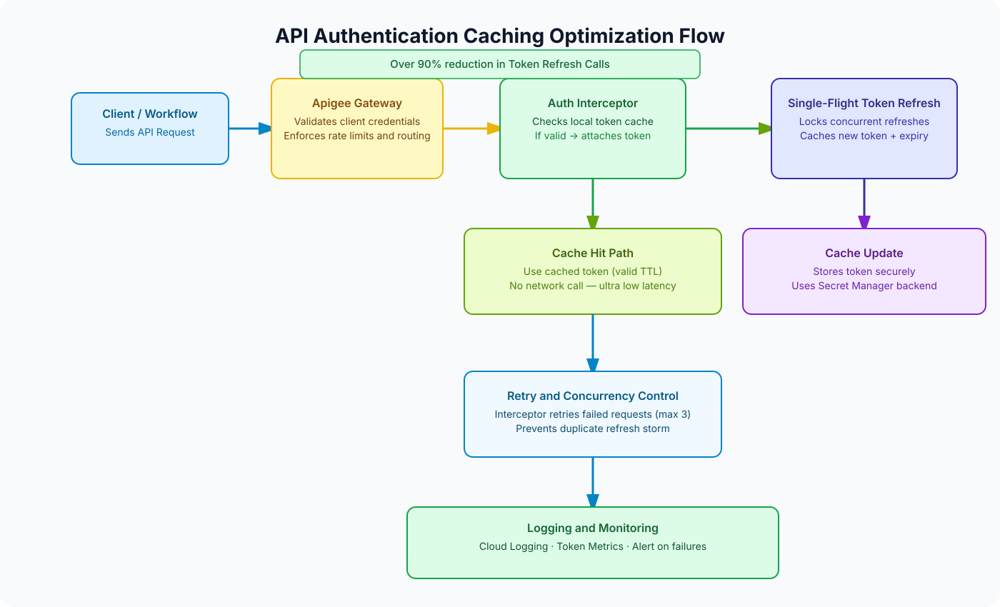
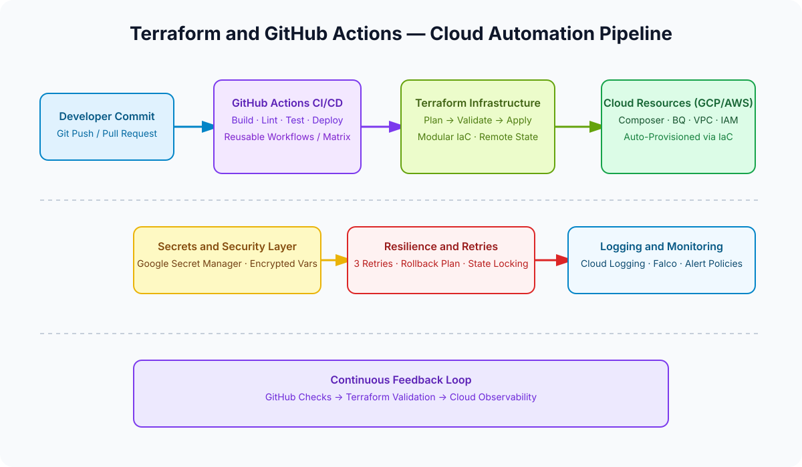

Cloud Data Engineer — Deutsche Bank
2024 – Present · India
- Optimized composer (Airflow file processing), 10 times faster file transfer with higher reliability under variable networks.
- Optimized API authentication by caching access tokens with expiry, implementing single-flight refresh and interceptor-based retries, eliminating redundant refreshes and stabilizing concurrency while reducing auth calls by 90%.
- Faster, cheaper BigQuery-to-file exports by exploiting default temp tables and minimizing recompute.
- Optimized webhook pipeline, p95 reduced from 90 seconds to 15 seconds, p50 under 10 seconds, with resilient async design.
- Supported AI agent development using cloud run, gemini and google adk.
- Created physical and logical data models using SAP PowerDesigner.
- Managed real-time and batch ETL data pipelines, ensuring efficient data handling and real-time insights.
- Orchestrated complex workflows with airflow & optimized end-to-end data processing.
- Optimized SQL queries and Python scripts for efficient operations e.g., data retrieval and ingestion with large data in bigquery and GCS.
- Spearheaded the implementation of terraform and github actions for robust management of airflow DAG, GCS, GSM and Cloud functions.
- Conducted multiple POCs for ETL/ELT processes across on-premise and GCP environments.
- Migrated legacy data workflows from on-prem to GCP, reducing infrastructure maintenance overhead and achieving up to 40% cost savings.
Key Technical Impact
⚡ Async Webhook Pipeline
Reduced p95 latency from ~90s to 15s via async Cloud Function design, parallelized API calls, and BigQuery integration with resilient error handling.

Airflow Composer Optimization
Achieved 10× faster file transfer and download performance by parallelizing Airflow Composer's file handling and enabling resumable uploads for unstable networks.

API Authentication Caching
Reduced authentication calls by 90% using token caching, single-flight refresh logic, and interceptor-based retries. Stabilized concurrent requests and improved pipeline throughput.

Terraform & GitHub Actions
Automated deployments for Airflow DAGs, Cloud Functions, GCS, and GSM resources via Terraform and GitHub Actions CI/CD pipelines. Improved release reliability and reduced manual ops time.
